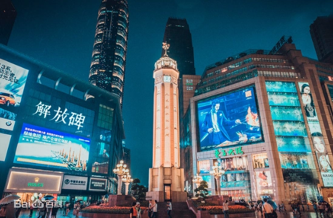
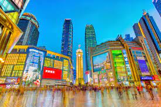
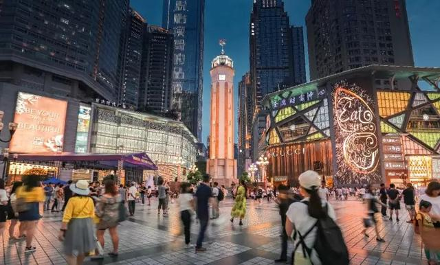

人民解放纪念碑，简称解放碑，位于重庆市渝中区民族路177号，于1946年10月31日动工，1947年8月落成。1950年10月1日，时任西南军政委员会主席刘伯承为“人民解放纪念碑”题写碑名。该处是中国人民反法西斯战争取得胜利的象征，也是重庆解放及重庆市的象征。
1949年11月30日，重庆解放，西南军政委员会决定对“抗战胜利纪功碑”进行改建，由西南军政委员会主席刘伯承题字，将“抗战胜利纪功碑”改名为“人民解放纪念碑”（简称解放碑）。
解放碑步行街，以解放碑的碑为中心的大十字，含民权路、民族路和邹容路共2. 24万平方米为核心，区域内商业网点达4482个，营业面积共121万平方米，其中，营业面积超过5000平方米的大型商场有20多家。解放碑商贸中心区是指解放碑CBD的核心部分，承担商务、商贸双重功能
新世纪百货大楼前的木凳，花架、小叶榕木，好吃街中的真人大小的雕塑等是解放碑步行街优良的环境设施的代表。解放碑步行街的街道长期设花坛，两旁植行道树，这样做可以美化休闲空间，在一定程度上弥补街区本身绿化的不足
